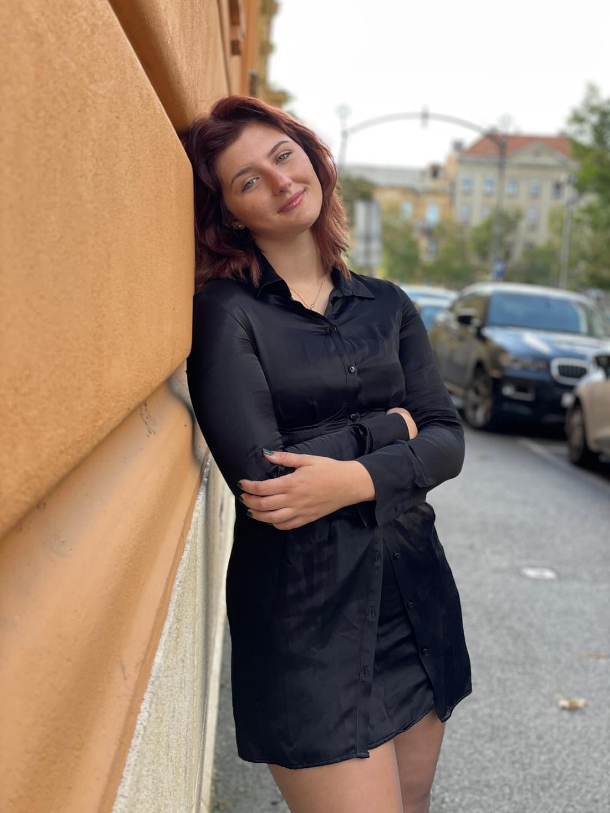
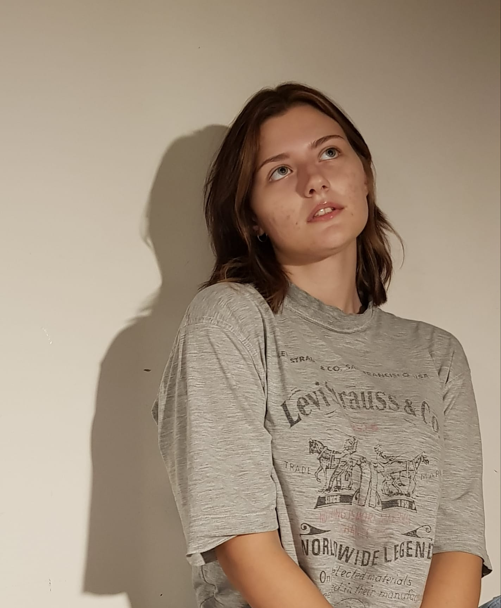

- O meni
- Vježba 2
- Logo
- Vježba 3
- Vježba 4
- Vježba 5
- Vježba 6
Ja sam Sindi i dobrodošli na moje stranice! Rođena sam 23.11.2001. u Splitu.
Živim u Metkoviću i tu sam pohađala osnovnu školu i gimnaziju.
Sada sam na prvoj godini Grafičkog fakulteta u Zagrebu i ovu stranicu pravim kao dio vježbi za kolegij Multimedijske komunikacije.
 